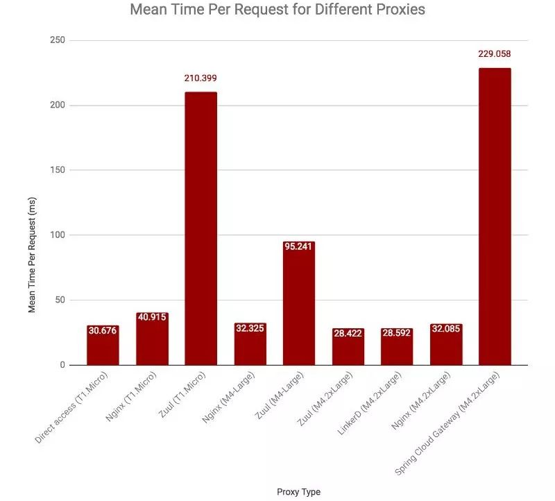

API网关性能比较：NGINX vs. ZUUL vs. Spring Cloud Gateway vs. Linkerd(未)
作者
周明耀
来源
http://www.infoq.com/cn/articles/comparing-api-gateway-performances
前几天拜读了 OpsGenie 公司（一家致力于 Dev & Ops 的公司）的资深工程师 Turgay Çelik 博士写的一篇文章（链接在文末），文中介绍了他们最初也是采用 Nginx 作为单体应用的网关，后来接触到微服务架构后开始逐渐采用了其他组件。
我对于所做的工作或者感兴趣的技术，喜欢刨根问底，所以当读一篇文章时发现没有看到我想要看到的设计思想，我就会四处搜集资料，此外这篇文章涉及了我正在捣鼓的 Spring Cloud，所以我就决定写一篇文章，争取能从设计思路上解释为什么会有这样的性能差异。
技术介绍
文中针对 Nginx、ZUUL、Spring Cloud、Linkerd 等技术进行了对比（其实还有 Envoy 和 UnderTow 也是属于可选的 API 网关，本文不予涉及），那我就分别进行介绍，当然，首先得介绍 API 网关。
API 网关
API 网关出现的原因是微服务架构的出现，不同的微服务一般会有不同的网络地址，而外部客户端可能需要调用多个服务的接口才能完成一个业务需求，如果让客户端直接与各个微服务通信，会有以下的问题：
客户端会多次请求不同的微服务，增加了客户端的复杂性。
存在跨域请求，在一定场景下处理相对复杂。
认证复杂，每个服务都需要独立认证。
难以重构，随着项目的迭代，可能需要重新划分微服务。例如，可能将多个服务合并成一个或者将一个服务拆分成多个。如果客户端直接与微服务通信，那么重构将会很难实施。
某些微服务可能使用了防火墙 / 浏览器不友好的协议，直接访问会有一定的困难。
以上这些问题可以借助 API 网关解决。API 网关是介于客户端和服务器端之间的中间层，所有的外部请求都会先经过 API 网关这一层。也就是说，API 的实现方面更多的考虑业务逻辑，而安全、性能、监控可以交由 API 网关来做，这样既提高业务灵活性又不缺安全性，典型的架构图如图所示：
使用 API 网关后的优点如下：
易于监控。可以在网关收集监控数据并将其推送到外部系统进行分析。
易于认证。可以在网关上进行认证，然后再将请求转发到后端的微服务，而无须在每个微服务中进行认证。
减少了客户端与各个微服务之间的交互次数。
NGINX 服务
Nginx 由内核和模块组成，内核的设计非常微小和简洁，完成的工作也非常简单，仅仅通过查找配置文件与客户端请求进行 URL 匹配，用于启动不同的模块去完成相应的工作。
下面这张图反应的是 HTTP 请求的常规处理流程：
Nginx 的模块直接被编译进 Nginx，因此属于静态编译方式。启动 Nginx 后，Nginx 的模块被自动加载，不像 Apache，首先将模块编译为一个 so 文件，然后在配置文件中指定是否进行加载。在解析配置文件时，Nginx 的每个模块都有可能去处理某个请求，但是同一个处理请求只能由一个模块来完成。
Nginx 在启动后，会有一个 Master 进程和多个 Worker 进程，Master 进程和 Worker 进程之间是通过进程间通信进行交互的，如图所示。Worker 工作进程的阻塞点是在像 select()、epoll_wait() 等这样的 I/O 多路复用函数调用处，以等待发生数据可读 / 写事件。Nginx 采用了异步非阻塞的方式来处理请求，也就是说，Nginx 是可以同时处理成千上万个请求的。一个 Worker 进程可以同时处理的请求数只受限于内存大小，而且在架构设计上，不同的 Worker 进程之间处理并发请求时几乎没有同步锁的限制，Worker 进程通常不会进入睡眠状态，因此，当 Nginx 上的进程数与 CPU 核心数相等时（最好每一个 Worker 进程都绑定特定的 CPU 核心），进程间切换的代价是最小的。
Netflix 的 Zuul

Zuul 是 Netflix 开源的微服务网关组件，它可以和 Eureka、Ribbon、Hystrix 等组件配合使用。Zuul 的核心是一系列的过滤器，这些过滤器可以完成以下功能：
身份认证与安全：识别每个资源的验证要求，并拒绝那些与要求不符的请求。
审查与监控：与边缘位置追踪有意义的数据和统计结果，从而带来精确的生产视图。
动态路由：动态地将请求路由到不同的后端集群。
压力测试：逐渐增加指向集群的流量，以了解性能。
负载分配：为每一种负载类型分配对应容量，并弃用超出限定值的请求。
静态响应处理：在边缘位置直接建立部分响应，从而避免其转发到内部集群。
多区域弹性：跨越 AWS Region 进行请求路由，旨在实现 ELB（Elastic Load Balancing，弹性负载均衡）使用的多样化，以及让系统的边缘更贴近系统的使用者。
上面提及的这些特性是 Nigix 所没有的，这是因为 Netflix 公司创造 Zuul 是为了解决云端的诸多问题（特别是帮助 AWS 解决跨 Region 情况下的这些特性实现），而不仅仅是做一个类似于 Nigix 的反向代理，当然，我们可以仅使用反向代理功能，这里不多做描述。
Zuul1 是基于 Servlet 框架构建，如图所示，采用的是阻塞和多线程方式，即一个线程处理一次连接请求，这种方式在内部延迟严重、设备故障较多情况下会引起存活的连接增多和线程增加的情况发生。
Zuul2 的巨大区别是它运行在异步和无阻塞框架上，每个 CPU 核一个线程，处理所有的请求和响应，请求和响应的生命周期是通过事件和回调来处理的，这种方式减少了线程数量，因此开销较小。又由于数据被存储在同一个 CPU 里，可以复用 CPU 级别的缓存，前面提及的延迟和重试风暴问题也通过队列存储连接数和事件数方式减轻了很多（较线程切换来说轻量级很多，自然消耗较小）。这一变化一定会大大提升性能，我们在后面的测试环节看看结果。
我们今天谈的是 API 网关性能，这一点也涉及到高可用，简单介绍 Zuul 的高可用特性，高可用是非常关键的，因为外部请求到后端微服务的流量都会经过 Zuul，所以在生产环境中一般都需要部署高可用的 Zuul 来避免单点故障。一般我们有两种部署方案：
1. Zuul 客户端注册到 Eureka Server
这种情况是比较简单的情况，只需要将多个 Zuul 节点注册到 Eureka Server 上，就可以实现 Zuul 的高可用。事实上，这种情况下的高可用和其他服务做高可用的方案没有什么区别。我们来看下面这张图，当 Zuul 客户端注册到 Eureka Server 上时，只需要部署多个 Zuul 节点就可以实现高可用。Zuul 客户端会自动从 Eureka Server 查询 Zuul Server 列表，然后使用负载均衡组件（例如 Ribbon）请求 Zuul 集群。
2. Zuul 客户端不能注册到 Eureka Server
假如说我们的客户端是手机端 APP，那么不可能通过方案 1 的方式注册到 Eureka Server 上。这种情况下，我们可以通过额外的负载均衡器来实现 Zuul 的高可用，例如 Nginx、HAProxy、F5 等。
如图所示，Zuul 客户端将请求发送到负载均衡器，负载均衡器将请求转发到其代理的其中一个 Zuul 节点，这样就可以实现 Zuul 的高可用。
Spring Cloud
虽然 Spring Cloud 带有“Cloud”，但是它并不是针对云计算的解决方案，而是在 Spring Boot 基础上构建的，用于快速构建分布式系统的通用模式的工具集。
使用 Spring Cloud 开发的应用程序非常适合在 Docker 或者 PaaS 上部署，所以又叫云原生应用。云原生可以简单理解为面向云环境的软件架构。
既然是工具集，那么它一定包含很多工具，我们来看下面这张图：
这里由于仅涉及到 API 网关的对比，因此我不逐一介绍其他工具了。
Spring Cloud 对 Zuul 进行了整合，但从 Zuul 来看，没有大变化，但是 Spring Cloud 整个框架经过了组件的集成，提供的功能远多于 Netflix Zuul，可能对比时会出现差异。
Service Mesh 之 Linkerd
我想 Turgay Celik 博士把 Linkerd 作为对比对象之一，可能是因为 Linkerd 为云原生应用提供弹性的 Service Mesh，而 Service Mesh 能够提供轻量级高性能网络代理，并且也提供微服务框架支撑。
从介绍来看，linkerd 是我们面向微服务的开源 RPC 代理，它直接立足于 Finagle（Twitter 的内部核心库，负责管理不同服务间之通信流程。事实上，Twitter 公司的每一项在线服务都立足于 Finagle 构建而成，而且其支持着每秒发生的成百上千万条 RPC 调用）构建而成，设计目标在于帮助用户简化微服务架构下的运维，它是专用于处理时间敏感的服务到服务的通信基础设施层。
和 Spring Cloud 类似，Linkerd 也提供了负载均衡、熔断机器、服务发现、动态请求路由、重试和离线、TLS、HTTP 网关集成、透明代理、gRPC、分布式跟踪、运维等诸多功能，功能是相当全了，为微服务框架的技术选型又增加了一个。由于没有接触过 Linkerd，所以暂时无法从架构层面进行分析，后续会补充这方面的内容，自己来做一次技术选型。
性能测试结果
Turgay Çelik 博士的那篇文章里使用了 Apache 的 HTTP 服务器性能评估工具 AB 作为测试工具。注意，由于他是基于亚马逊（AWS）公有云的进行的测试，可能和你实际物理机上的测试结果有出入。
实验中启动了客户端和服务端两台机器，分别安装多个待测试服务，客户端通过几种方式分别访问，尝试获取资源。测试方案如下图所示：
Turgay Çelik 博士的这次测试选择了三个环境，分别是：
单 CPU 核，1GB 内存：用于比较 Nginx 反向代理和 Zuul（去除第一次运行后的平均结果）；
双 CPU 核，8GB 内存：用于比较 Nginx 反向代理和 Zuul（去除第一次运行后的平均结果）;
8 个核 CPU，32GB 内存：用于比较 Nginx 反向代理、Zuul（去除第一次运行后的平均结果）、Spring Cloud Zuul、Linkerd。
测试过程均采用 200 个并行线程发送总共 1 万次请求，命令模板如下所示：
ab -n 10000 -c 200 HTTP://
<server-address>/<path to resource>
注意：由于 Turgay Çelik 博士的测试过程中是基于 Zuul 1 进行的测试，所以性能上较差，不能真实反映当前 Zuul 版本的性能状况，后续文章我会自己做实验并发布结果。

从上面的结果来看，单核环境下，Zuul 的性能最差（950.57 次 /s），直接访问方式性能最好（6519.68 次 /s），采用 Nginx 反向代理方式较直接访问方式损失 26% 的性能（4888.24 次 /s）。在双核环境下，Nginx 的性能较 Zuul 性能强接近 3 倍（分别是 6187.14 次 /s 和 2099.93 次 /s）。在较强的测试环境下（8 核），直接访问、Nginx、Zuul 差距不大，但是 Spring Cloud Zuul 可能由于内部整体消耗，导致每秒的请求数只有 873.14。
最终结论
从产品思维来看，API 网关负责服务请求路由、组合及协议转换。客户端的所有请求都首先经过 API 网关，然后由它将请求路由到合适的微服务。API 网关经常会通过调用多个微服务并合并结果来处理一个请求，它可以在 Web 协议（如 HTTP 与 WebSocket）与内部使用的非 Web 友好协议之间转换，所以说作用还是很大的，因此技术方案选型对于整个系统来说也有一定重要性。
从我所理解的这四款组件的设计原理来看，Zuul1 的设计模式和 Nigix 较像，每次 I/O 操作都是从工作线程中选择一个执行，请求线程被阻塞直到工作线程完成，但是差别是 Nginx 用 C++ 实现，Zuul 用 Java 实现，而 JVM 本身有第一次加载较慢的情况。Zuul2 的性能肯定会较 Zuul1 有较大的提升，此外，Zuul 的第一次测试性能较差，但是从第二次开始就好了很多，可能是由于 JIT（Just In Time）优化造成的吧。而对于 Linkerd，它本身是对于资源比较敏感的一种网关设计，所以在通用环境下拿它和其他网关实现相比较，可能会出现不准确的结果。
作者：周明耀
介绍：毕业于浙江大学，工学硕士。13 年软件开发领域工作经验，10 年技术管理经验，4 年分布式软件开发经验，提交发明专利 17 项。著有《大话 Java 性能优化》、《深入理解 JVM&G1 GC》、《技术领导力 程序员如何才能带团队》。
END